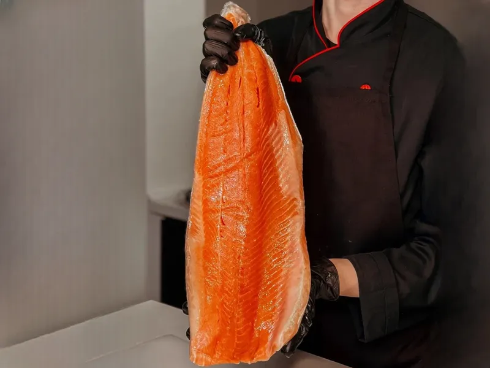

Стейки и филе
Филе форели замороженное
Цена и наличие
- заморож.81 BYN / кгВ наличии
Данные на 23.11.2026.
Характеристики
- Страна
- Беларусь
- Производитель
- ООО "Марино-групп"
Описание
Предлагаем филе форели мороженое высокого качества – отличный выбор для вкусных и полезных блюд!
ОСНОВНОЕ
Пищевая ценность на 100 г продукта белки – 20 г, жиры – 6 г, углеводы – 0 г Энергетическая ценность на 100 г продукта 140 ккал Тип питания низкокалорийный продукт, экологичный продукт Условия и срок хранения хранить при температуре -10 — -20 градусов не более 3 месяцев Страна Беларусь Производитель ООО “Марино-групп”
ДОПОЛНИТЕЛЬНО
Замороженное филе форели — удобный продукт для домашнего приготовления, семейного ужина и праздничных блюд без необходимости разделывать целую рыбу. Филе подходит для запекания, жарки, приготовления на гриле и пару, а также для пасты, салатов и других рыбных блюд. Мясо форели нежное, сочное и обладает мягким, приятным вкусом. Оно хорошо сочетается с лимоном, свежей зеленью, овощами, сливочными соусами, рисом, картофелем и умеренным количеством специй. Замороженный формат удобен для хранения и позволяет держать рыбу в запасе до нужного момента. Перед приготовлением филе рекомендуется постепенно разморозить в холодильнике — это помогает лучше сохранить структуру и сочность мяса. Филе форели можно запекать целым пластом, нарезать на порционные куски или использовать как основу для различных блюд. Оно хорошо подходит для духовки, сковороды, гриля, приготовления на пару и тушения с овощами или соусом. Главное преимущество филе — удобство приготовления. Не требуется разделывать целую рыбу, поэтому продукт подойдет для тех случаев, когда нужно быстро приготовить полноценное рыбное блюдо. Замороженное филе форели можно использовать как основное блюдо или как ингредиент для пасты, теплых салатов, запеканок и других рецептов. Благодаря универсальному вкусу оно подходит и для повседневного меню, и для праздничной подачи. В продаже — филе форели замороженное. Фактический вес и размер отдельных кусков могут отличаться в зависимости от партии. Заказать замороженное филе форели можно для запекания, жарки, приготовления на гриле и других домашних блюд из рыбы.